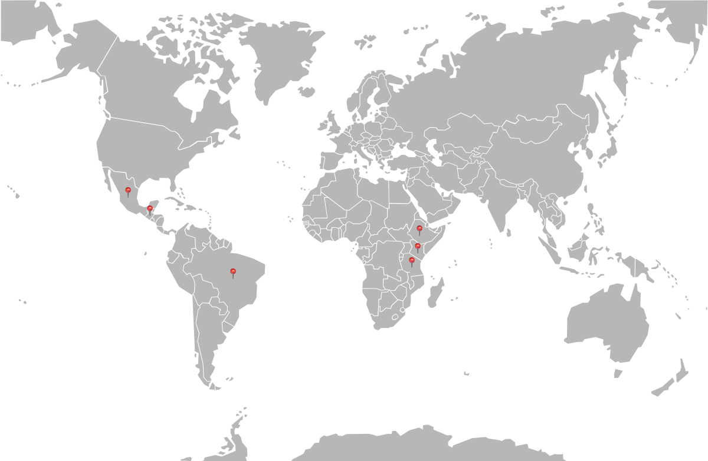
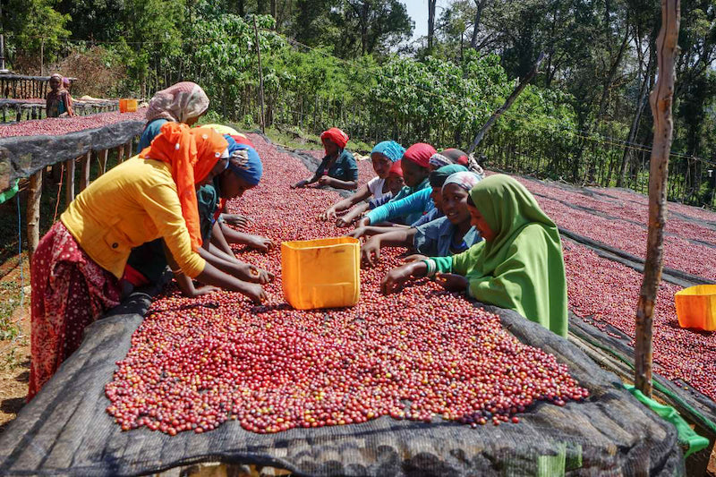

Coffee Origins World Map
The environment in which the coffee plant grows can affect the flavor of your coffee. Understanding the origin of your coffee plays a crucial role in determining your preferred flavor. This knowledge provides insights into the quality and consistency of the beans, allowing you to pinpoint the exact source of your coffee.Some of the most prominent regions where coffee is sourced are Ethiopia, Guatemala, Brazil, Kenya, Mexico, and Tanzania. Click on the map to learn more about these origins.

Coffee Processing Method

Frequently labeled as the most ancient coffee processing technique, natural processing involves allowing the coffee cherry to naturally dry under the sun, resulting in a distinct 'natural' flavor. This approach is best suited for arid climates.